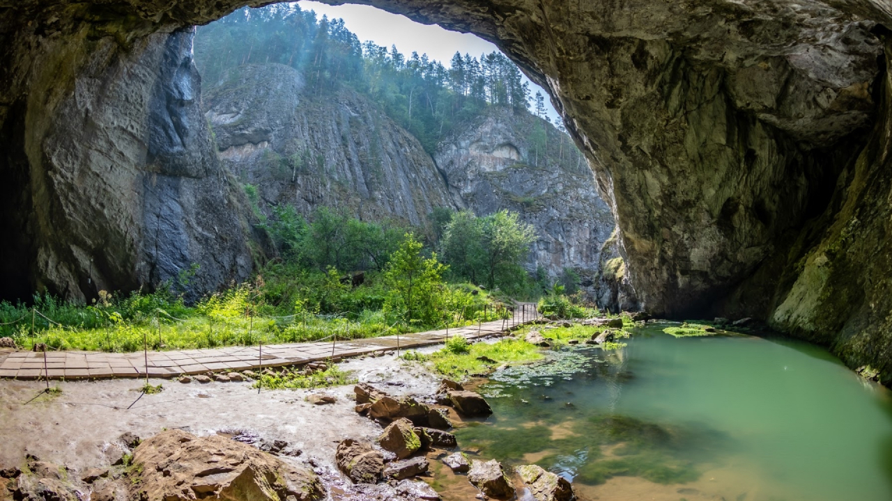
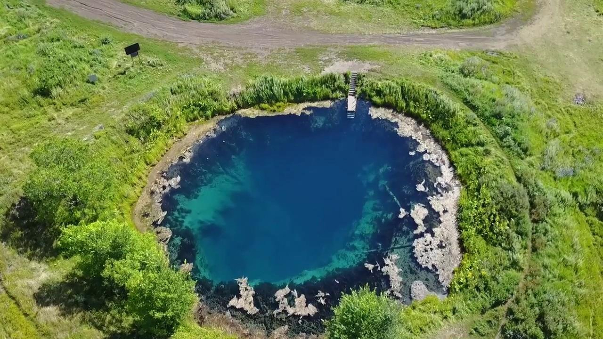
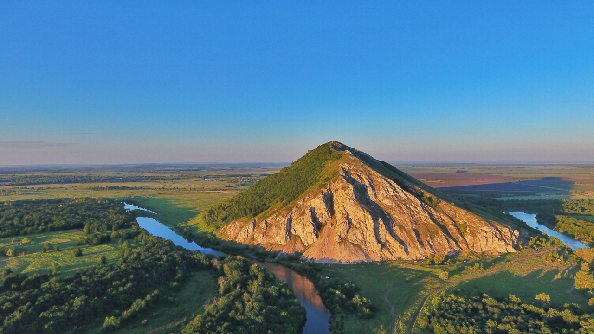
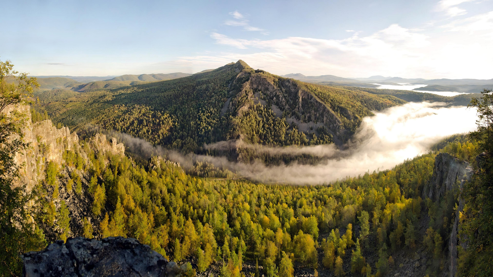
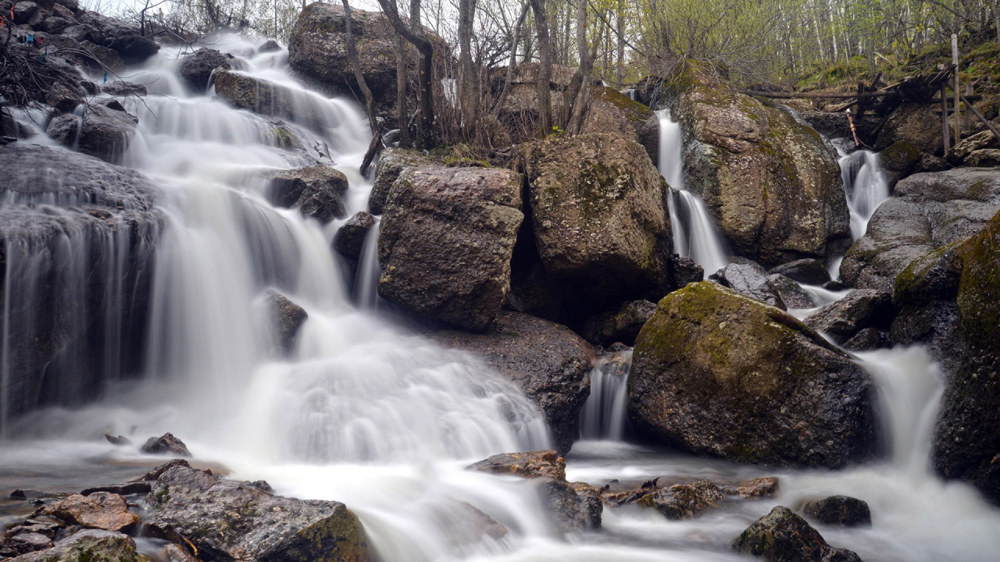
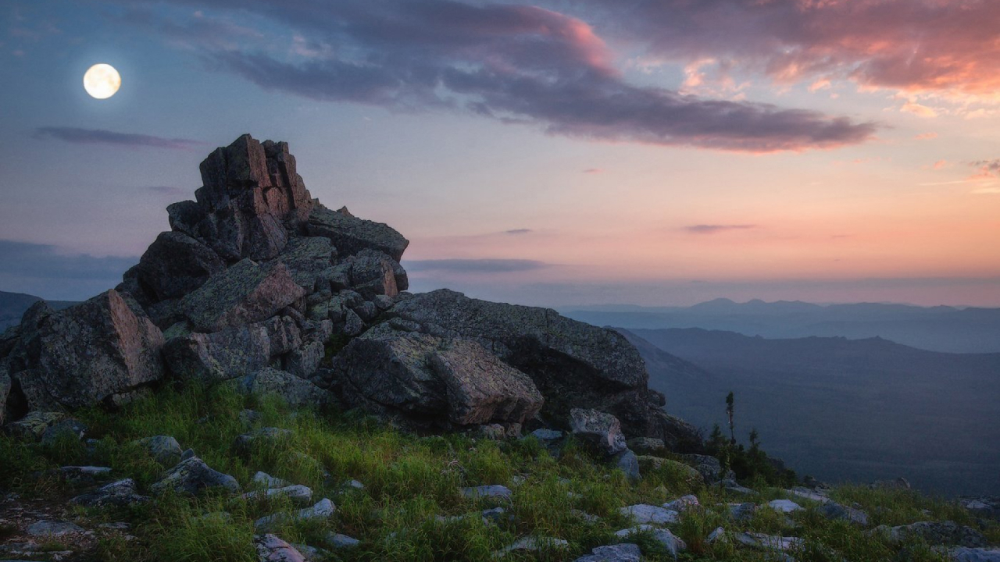
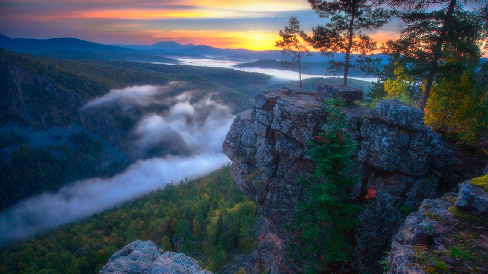
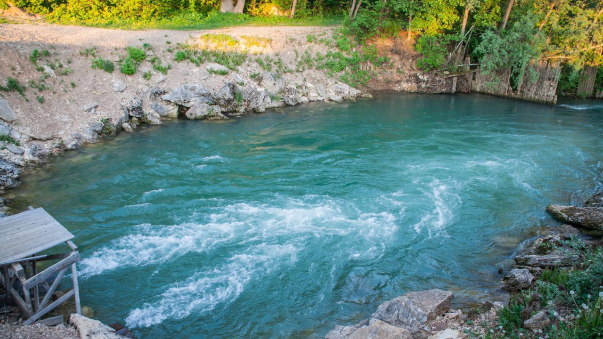
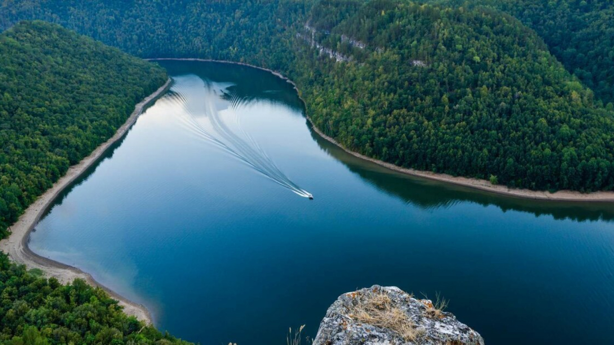
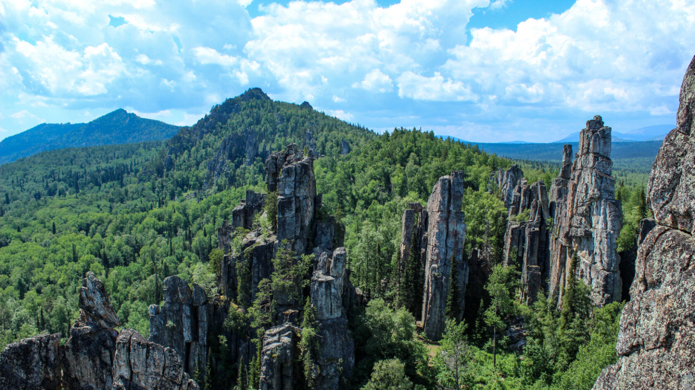

Интерактивная карта
Основные места для туризма в Башкортостане
Капова пещера (Шульган-Таш)
В заповеднике Шульган-Таш находится одна из самых больших карстовых пещер на Урале. Вход в пещеру
находится на южном склоне горы Сарыкуска и представляет собой широченную арку двадцатиметровой высоты.
Рядом раскинулось изумительное озеро глубиной 80 м, которое облюбовали дайверы. В трёхуровневой полости
длиной около 3-х км можно увидеть огромные залы, подземные озёра и уникальный трёхметровый сталагмит. На
первом уровне продолжает работу по созданию пещерной архитектуры неутомимая речка Шульган.
На стенах второго уровня можно увидеть многочисленные рисунки древних животных, антропоморфные фигуры,
различные знаки древних людей. Ученые относят их к эпохе палеолита.
Открытие наскальных надписей и рисунков в Каповой пещере совершило научный переворот. Находка доказала,
что на уральских землях в те времена уже жили не менее развитые люди, чем в Европе. Ранее считалось, что
такие находки возможны только в Испании и Франции.
Как добраться: Пещера расположена в 345 км от Уфы. Добраться туда
можно, доехав по трассе до Стерлитамака, затем повернуть в сторону Белорецка. Проследовать 50 км через
Петровское, Макарово, Кулгунино, Бретяк, Верхний Авзя, Магадеево, затем повернуть на Старосубхангулово.
После Субхангулово нужно двигаться в сторону Гадельгареева, за два км до него повернуть налево, проехать
около 5 км до стоянки, а затем повернуть направо и пройти 1,5 км вдоль Белой.

Голубое озеро (Зянгяр куль)
Небольшое озеро-родник площадью 400 кв. км. называют голубым из-за цвета воды. Живописное прозрачное
водное «блюдце» уложено целебной голубой глиной. В воде растворены полезные вещества, поэтому сюда
стремятся попасть желающие поправить своё здоровье. Однако смельчаков искупаться не так много, так как
вода всегда очень холодная (+ 5℃), Зимой озеро не замерзает. На дне дайверы обнаружили глубокие воронки,
а также несколько мощных родников. Широкий ручей, вытекающий из озера, впадает в реку Узень. С высоты
небольших известняковых скал находящихся рядом с озером, открывается великолепная панорама окрестностей.
Это излюбленная точка у туристов, чтобы делать потрясающие фотоснимки.
Как добраться: Добраться до Голубого озера можно на любом виде
транспорта. Самый удобный способ - это взять такси или арендовать машину. Если вы не планируете
арендовать машину, то самый простой способ добраться до Голубого озера - на общественном транспорте. От
Уфы до Голубого озера ходят автобусы № 110 и маршрутки № 41, 35, 34, 40. Стоимость проезда на автобусе
составляет около 90 рублей, на маршрутке - около 120 рублей. Время в пути - около 40 минут. От
автовокзала Уфы до озера также можно доехать на такси. Цены на такси в Уфе очень доступные, так что это
может быть лучшим вариантом для тех, кто не любит многолюдные автобусы.

Стерлитамакские шиханы
Неподалёку от города Стерлитамак сохранились древние коралловые рифы. Огромные конусообразные холмы
когда то были на дне древнего Пермского моря. Их возраст 230 млн. лет. В настоящее время осталось 3
геологических памятника:
- Юрактау;
- Куштау;
- Торатау.
Шихан Торатау изображён на гербе г. Ишимбай. Рядом находится печальная достопримечательность — руины
женской колонии архипелага ГУЛаг.
На Куштау в зимнее время функционирует трасса для горнолыжников. Невероятно красив самый северный шихан,
Юрактау.
На шиханах можно найти уникальные древние окаменелости: губки, кораллы, брахиоподы. На склонах холмов
встречаются растения, занесённые в Красную книгу.
Как добраться: На автомобиле нужно ехать до Уфы, затем по трассе Уфа – Оренбург до Стерлитамака. Затем по приведенной выше карте – в зависимости от заинтересовавшего вас шихана. Также до Стерлитамака легко можно доехать на автобусе или поезде, а до шиханов добраться пешком, на такси или попутках.

Гора Ямантау
Высочайшая гора Южного Урала возвышается на 1640 м. над уровнем моря и овеяна тайнами, интригами, не
всегда правдоподобными историями и закрыта для посещения. С южной стороны горы находится г. Межгорье,
который имеет статус закрытого административно-территориального образования.
В 60-х годах прошлого века здесь началась великая стройка, которую с развалом СССР законсервировали. В
конце 90-х годов она была возобновлена. В результате возникли завод по производству бетона и
горно-обогатительный комбинат. Некоторые блогеры выдвигают версии, что данные предприятия— далеко не
первостепенные и скрывают за собой засекреченный объект.
С башкирского языка «Яман» переводится как «плохая гора». Возможно, название дано из-за непроходимых
склонов и суровых погодных условий. Ходят слухи о том, что в окрестностях много медведей, опасных для
случайных путников.
Восхождение на гору Ямантау запрещено, но в интернете можно найти множество историй восхождения в этой
закрытой местности.
Как добраться: Добраться можно автомобильным транспортом до ЗАТО Межгорье, однако необходимо иметь специальное разрешение – пропуск. И даже если вы попадете в город, его территорию покинуть можно будет только по дороге, по которой вы приехали. Другой путь исключен, потому что местность патрулируют и местные егеря, и военные, которые хорошо обучены отлавливать в местных лесах тех, кто не должен там находиться.

Водопад Кук-Караук
Кук-Караук представляет собой многоярусные каскады воды. Чтобы увидеть невероятное зрелище, как водопад
ниспадает многоярусными каскадами, в Башкирию надо приезжать весной. От растаявших снегов в апреле и мае
он полноводный и могучий. Шум падающей воды слышен издалека. В жаркое лето тут можно застать лишь тонкие
отдельные струйки. В лесу встречаются редкостные виды растений и эндемики. Неподалёку от водопада видны
руины каменного моста — часть старинного тракта, возведённого в эпоху Екатерины II.
Рядом с водопадом много живописных известняковых скал. С вершины скалы Калим-Ускан открывается
потрясающие по красоте вид на окрестности.
На шестиметровой высоте на скале над рекой находится знаменитая Салаватская пещера, в где проходили
съёмки кинофильма «Салават Юлаев».
Как добраться: Дорога к ним начинается от небольшого села Макарово. За ним асфальт заканчивается и начинается грунтовая дорога. Она довольно плохая, но аккуратно можно проехать и на обычной легковушке. Чем ближе к водопаду, тем больше на дороге встречается больших камней. От села Макарово до скалы Калим-Ускан 8 км, а до водопада Кук-Караук 12 км. Из Уфы на машине нужно выехать на трассу на Оренбург, свернуть в Стерлитамак. Заехав в город по Уфимскому тракту, на кольце повернуть на улицу Техническую. Выехав из города по мосту через реку Белую, ехать в сторону Кулгунино. За селом Макарово начинается нужная дорога к скалам и водопаду.

Хребет Иремель
Хребет, вытянутый на 12 км. делится на Большой Иремель и Малый Иремель. Здесь находятся истоки реки
Белой. Склоны покрыты огромными валунами. В некоторых местах встречаются каменные котлы, в углублениях
которых после дождя скапливается годная для питья вода. В хорошую погоду с вершины открывается
величественная панорама уральских гор.
На высоте 700 м. растут реликтовые ельники, пережившие ледниковый период. Растительность хребта
уникальна тем, что по пути на вершину можно проследить смену четырёх высотных поясов. Внизу мы видим
берёзки, а наверху открывается настоящая горная тундра.
Издавна гора почиталась как священная, на которой жили боги. Существует легенда, что Иремель не даст
взобраться на вершину людям с нечистыми помыслами.
Как добраться: До Иремеля ведут несколько официальных туристических маршрутов. Со стороны сел Николаевка, Байсакалово, Новохусаиново и Тюлюк. Наиболее популярным и легкодоступным является маршрут со стороны села Тюлюк. Плюсы его в том, что в Тюлюке создана некоторая туристическая инфраструктура, а маршрут со стороны Тюлюка наиболее облагорожен и, соответственно, удобен. Плюс этот маршрут самый короткий. А первые два направления уже для более продвинутых и опытных туристов. А также тех, кто хочет посмотреть на Иремель с другой стороны и увидеть более дикую природу. Например, со стороны Тыгынских озер (Тыгынских болот), куда можно попасть со стороны деревни Байсакалово и Новохусаиново, склон Иремеля более крутой, а со стороны Тюлюка более пологий. И, соответственно, визуально с Тыгынских озер он воспринимается более внушительно.

Поселок Айгир
Небольшой посёлок в горах Южного Урала с красивым названием Айгир очень популярен у путешественников с
рюкзаками на плечах, которые покоряют Уральские горы. Здесь находится живописный хребет Караташ.
Впечатляют причудливые скалы над долиной речки Малый Инзер. Многим из них дали названия. Скала Львиная
голова напоминает профиль царя зверей. Второе название этих скалистых мест, «зубы Шурале», произошло от
названия башкирского духа леса — страшного бородатого существа небольшого росточка с рогом на лбу.
Когда-то здесь было предприятие по выжиганию древесного угля. Сохранились остатки углевыжигательных
печей.
Как добраться: На автомобиле или автобусе туристы доезжают до города Белорецк, затем следует доехать (на машине или электричке) до поселка Айгир. Расстояние от Белорецка до Айгира — 84 км.

Источник Красный Ключ
Самый большой в России и второй по мощности в мире водный источник получил статус гидрологического
памятника природы. Водный поток устремляется наружу из огромных карстовых воронок со скоростью 14,88
куб. м. в сек.
До Октябрьской революции 1917 года ключ назывался Белым. Затем родник «покраснел». Родниковая вода
относится к категории минеральных гидрокарбонатно кальциевых. Очень много извести, что отражается на
белёсом оттенке источника. Вода пригодна для питья и очень приятная по вкусу. Температура всегда
держится на уровне + 5℃. Пройдя большой путь через подземный грунт, выходит наружу очищенной.
До середины 70-х годов прошлого столетия функционировали бумажная фабрика и электростанция, работающие
от энергии источника. Сейчас в местном поселке производят бутилированную воду «Красный Ключ».
Как добраться: Источник Красный Ключ находится на окраине одноименного села, на левом берегу реки Уфы, в 120 км к северо-востоку от города Уфа. На автомобиле нужно ехать по маршруту Уфа – Шакша (Князево) – Иглино – Красная горка – Чандар — Красный ключ. От города Уфа до Красного Ключа можно доехать также на автобусе. Ближайшая железнодорожная станция – Иглино на линии Уфа – Челябинск в 75 км от Красного Ключа. От Иглино на север идет дорога до Павловки, которая проходит через Красный Ключ. От станции можно добраться на автобусе, попутках или такси.

Нугушское водохранилище
Водоём был возведён на речке Нугуш в 1965 году. Эта часть территории национального парка «Башкирия»
славится невероятной красотой живописных гор и скал, поросших буйной лесной растительностью.
Водохранилище шириной до 5 км. занимает в длину 20-ти километровую зону и вмещает 400 млн куб. м. воды.
Неподалеку от плотины находится п. Нугуш. По берегам возведены базы отдыха, турбазы и детские лагеря.
Для отдыхающих регулярно организуются конные туры.
По рукотворному водоёму отдыхающие катаются на катерах или гидроциклах, любуются открывающейся
потрясающим природным ландшафтом.
Как добраться: От Уфы на автомобиле нужно ехать по трассе на Оренбург до Мелеуза, а затем до села Нугуш, в котором начинается водохранилище. От Екатеринбурга ехать по Пермскому тракту, повернуть на Нижние Серги, ехать в сторону Артей. Далее ехать через село Свердловское, Малую и Большую Тавру, Месягутово, Малояз и выехать на трассу М5. В районе Уфы повернуть на Оренбург, затем через Мелеуз к селу Нугуш. Из Оренбурга ехать на машине по трассе на Уфу, свернуть на Мелеуз и через Нугуш доехать до водоёма. Из Перми на машине ехать на Уфу (через Кукуштан, Чернушку, Куеду, Бирск), объехать Уфу и двигаться по трассе на Оренбург, затем на Мелеуз и Нугуш. Из Челябинска можно доехать по М5 до Уфы, свернуть на Оренбург, затем через Мелеуз и Нугуш до водохранилища. Сориентироваться поможет размещённая ниже карта. Расстояние от Уфы – 250 км, от Оренбурга – 200 км, от Челябинска – 650 км, от Перми – 720 км, от Екатеринбурга – 770 км.

Хребет Инзерские Зубчатки
Горный хребет под названием «Инзерские Зубчатки» имеет символическое значение, уравновешивая две
крайности. Он разделяет две горы, которые ассоциируются у местных жителей со злом (Ямантау) и добром
(Иремель). Каждый отрезок горной цепи имеет своё романтическое название:
- Хаос;
- Три богатыря;
- Замок;
- Маяк.
Возле Инзерских Зубчаток издревле селились отшельники, которые жили здесь и в период репрессий 30-х
годов. Есть гипотеза, что волхвы, которые прибыли с дарами для Христа в Вифлеем, были из этих мест.
Попсть сюда можно как в составе организованного похода, которые осуществляют местные туристические
компании, так и самостоятельно.
Инзерские зубчатки восхищают не только своей уникальной красотой, здесь очень богатый растительный и
животный мир. На склонах гор растут многочисленные лиственницы, ели, пихты, сосны, березы, осины.
Подножье хребта покрыто густым лесом, где произрастают вечнозеленые растения и лиственные породы. Среди
животных здесь можно встретить кабанов, медведей, зайцев, лис, волков, лосей, рысей, ежиков и даже
ядовитых змей.
Неподалёку от Зубчаток находятся месторождения магического камня — горного хрусталя, который интересует
любителей геологического туризма.
Как добраться: Чтобы побывать в этом удивительном месте, сначала нужно доехать до города Белорецк в Республике Башкортостан. Затем – до поселка Тирлянский (35 километров). С северо-западной окраины поселка начинается грунтовая дорога в сторону Инзерских Зубчаток (в эту дорогу переходит Первомайский переулок). Расстояние от Тирлянского до Инзерских Зубчаток составляет 17 километров. На машинах (кроме внедорожников) здесь не проехать. Дорога сильно разбита лесовозами. Пешком в сухую погоду путь достаточно легко проходится, лишь местами встречаются сырые и грязные участки. Также нужно быть готовым переходить реку вброд (в межень уровень воды не выше сапогов). После реки Тирлян (справа от брода есть мост) на развилке нужно будет повернуть налево. Вид на хребет Инзерские Зубчатки открывается еще за несколько километров до них. После кордона Миселя за вырубкой нужно будет повернуть налево (на дереве рядом есть метки для туристов) – на прямую дорогу в сторону горы. Через несколько километров перед выходом на дорогу, с которой вы свернули, справа будет родник с водой белесого цвета. Еще через километр в гору будет родник слева от дороги. Именно им лучше пользоваться. Вода в этом роднике чистая и вкусная. От этого родника до скал остается примерно километр.
